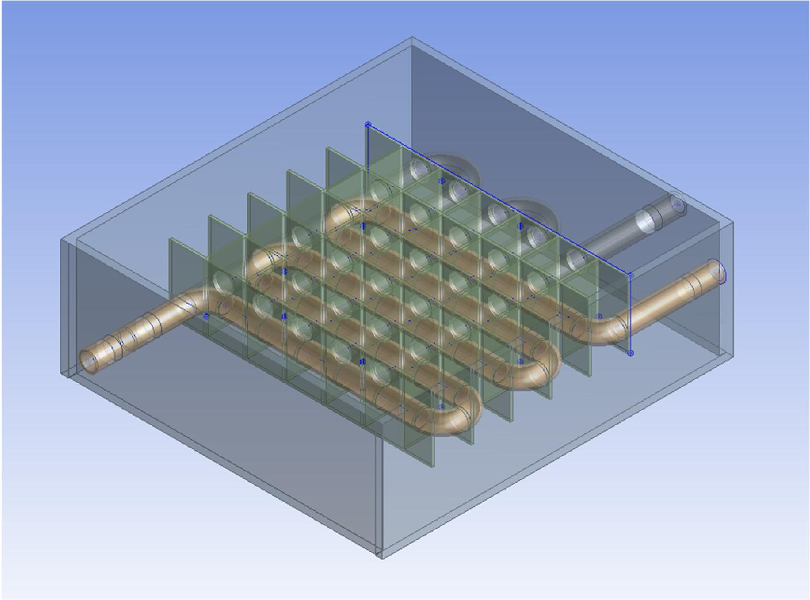
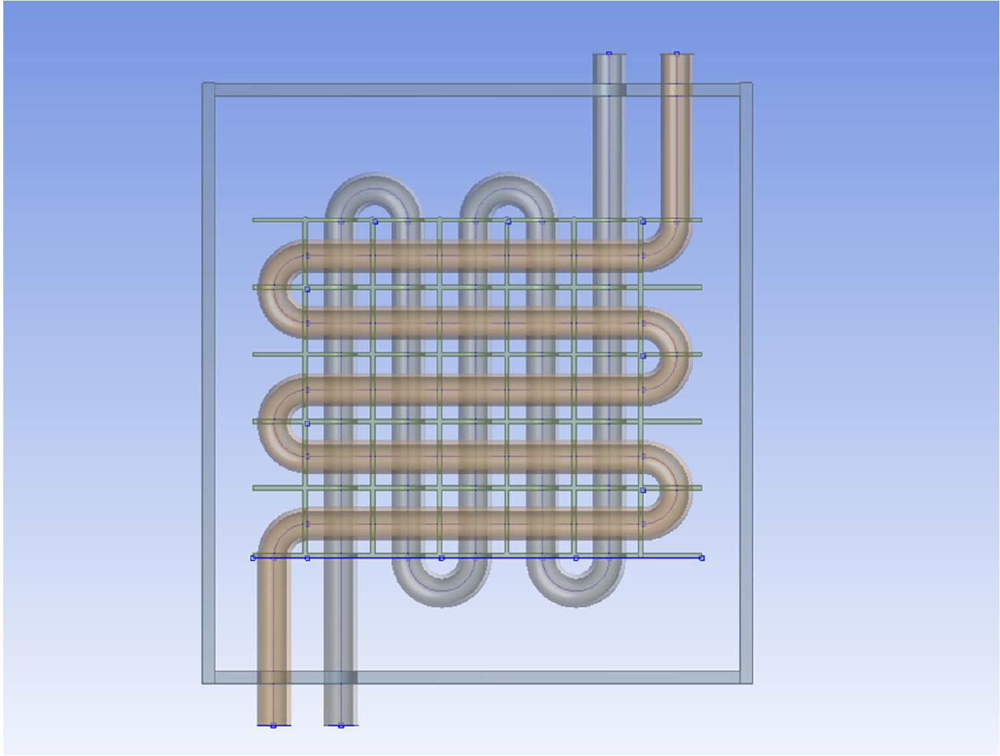
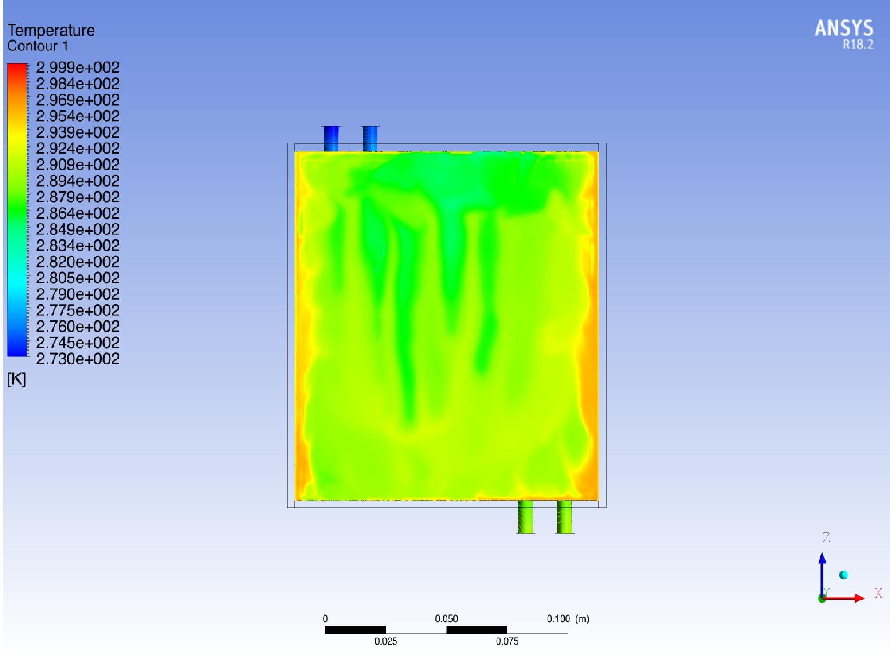
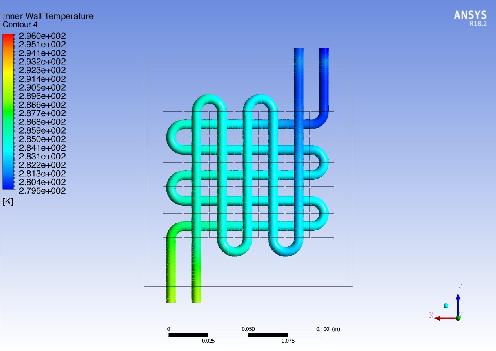
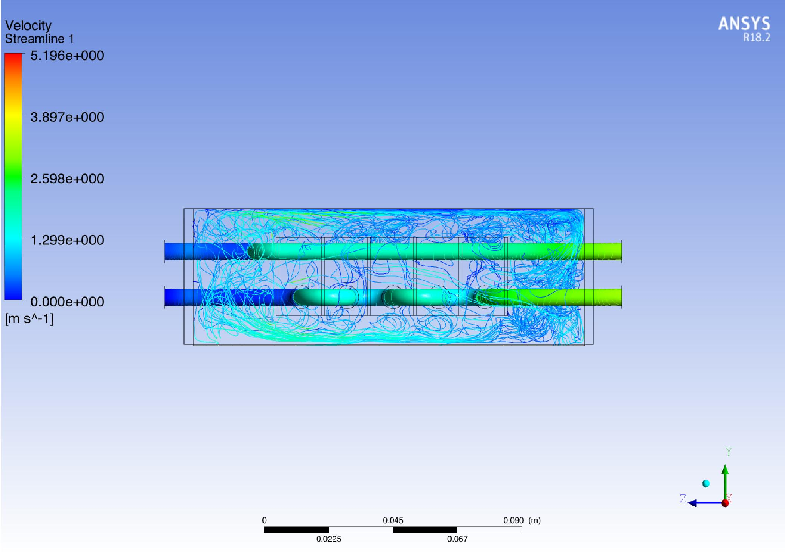
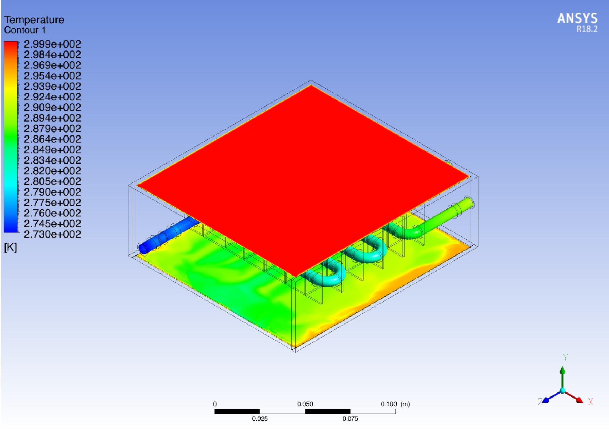
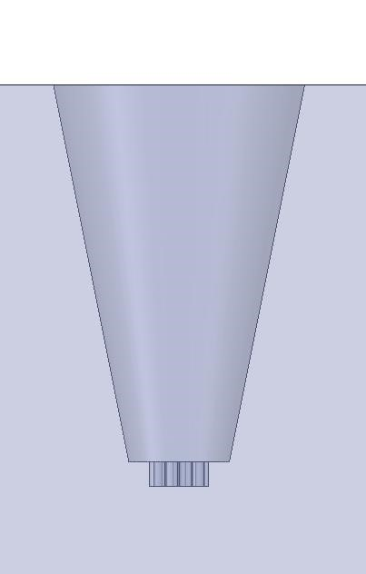
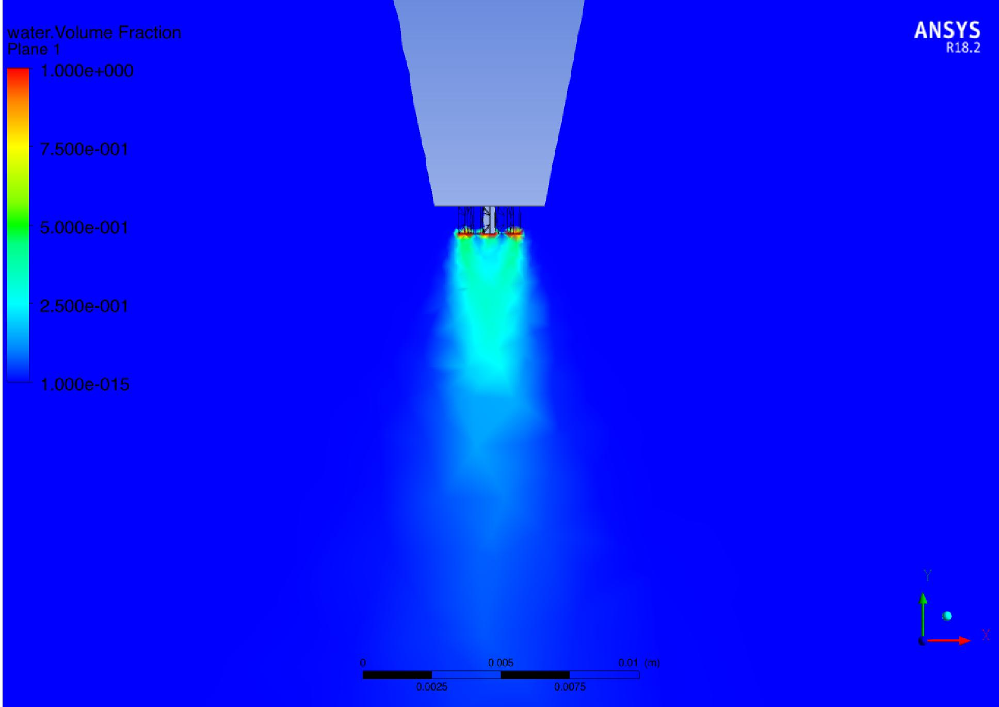
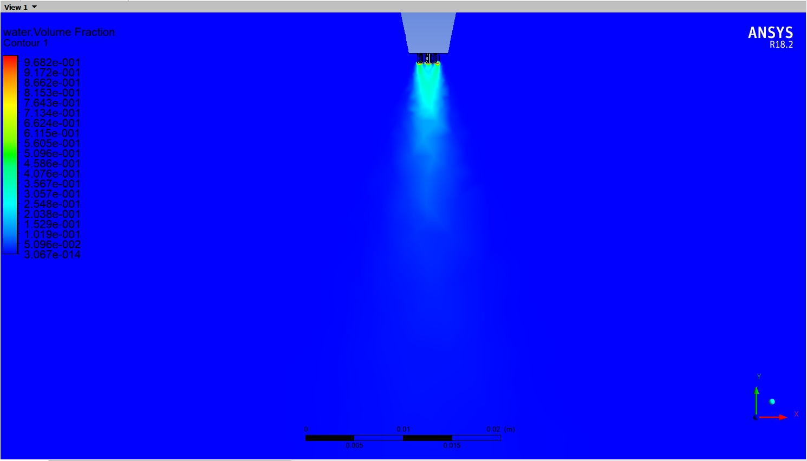
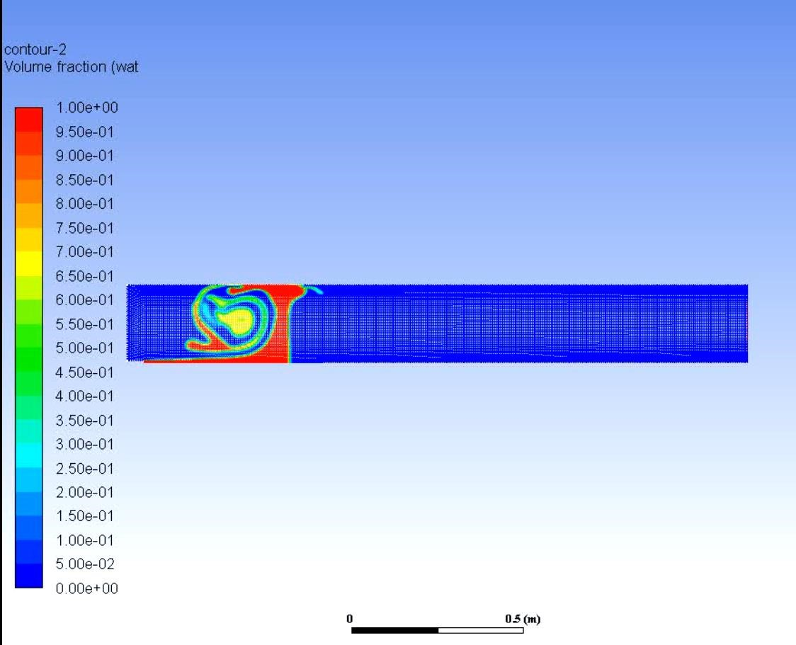

Environmental test chambers qualify hardware by holding it at a controlled temperature and humidity. The 85/85 damp-heat standard parks a part at 85 °C and 85% RH for up to 1000 hours, and HALT/HASS
cycling swings it harder than that. Building one means solving two coupled control problems with
opposite requirements: you must first drive the incoming air to a target dry-bulb
temperature, then inject exactly enough water to hit a target relative humidity, without the water
undoing the temperature setpoint, and without liquid ever reaching the test article.
That second failure mode is the one nobody designs for. If the spray does not break up and evaporate
before it reaches the payload, you are no longer running a humidity test, you are running a water
ingress test, and every result from that chamber is suspect. I designed the chamber around two decoupled
units: a cross-flow finned heat exchanger to set dry-bulb temperature, and an atomizer-fed
humidification stage. I analyzed both: conjugate heat transfer through the exchanger, and
multiphase CFD of the spray that feeds the humidity unit.
ANSYS Fluent
VOF Multiphase
Cross-Flow Heat Exchanger
Conjugate Heat Transfer
Psychrometrics
SolidWorks
7 K
air temperature drop per heat exchanger stage (30 °C → 23 °C)
3×
stages specified in series to reach the required setpoint
0.968
peak liquid volume fraction at the orifice, a coherent core rather than a mist
~30%
of chamber length still holding liquid water at t = 5 s
Two-Unit Architecture
Temperature and humidity are deliberately decoupled into separate units so each can be analyzed and controlled independently.
Unit 1 · Temperature Control
Cross-flow heat exchanger: two interleaved serpentine tube circuits carrying chilled water through a stacked plate-fin array, with the process air passing across them. Fins were added specifically to raise the air-side heat transfer rate, which is the limiting resistance.
Unit 2 · Humidity Control
The now-cold dry air passes into a chamber where multi-orifice atomizers inject water. Dry air absorbs the moisture, moving the state up the psychrometric chart at roughly constant dry-bulb temperature to the target RH.
Solver
ANSYS Fluent (Workbench 18.1 / 18.2), pressure-based. Conjugate heat transfer for the exchanger; transient Volume-of-Fluid with explicit interface reconstruction for the spray.
Exchanger Scale
Core roughly 100 mm across, resolved with tube inner walls, plate fins and both water circuits as separate solid zones so wall temperature is a solved field rather than a boundary condition.
Operating Point
Process air in at 30 °C; chilled water in at 0 °C; atomizer water at 25 °C. Transient spray runs carried to t = 5 s.
Psychrometric Basis
Target states set via DBT / WBT / dew point on the psychrometric chart. Air density computed through the virtual-temperature route (saturation vapour pressure → actual vapour pressure → Tv), then velocity and mass air flow.
Design Context
85/85 damp-heat soak (85 °C, 85% RH, up to 1000 h), HALT and HASS accelerated cycling, thermal shock, for pharmaceutical, plastics, rubber and electronics qualification.
Driving Constraint
Climate chambers are heavy continuous energy consumers. Every design decision here trades against the electrical load needed to hold a setpoint for a 1000-hour soak.
Unit 1 · Cross-Flow Heat Exchanger
Design and conjugate heat transfer analysis of the temperature control unit.

Exchanger core, serpentine tubes through plate-fin stack

Front view, two interleaved water circuits

Air-side temperature field, 273–300 K

Tube inner-wall temperature along the circuit

Air velocity streamlines, peak 5.20 m/s

Isometric section, inlet face vs. cooled core
Unit 2 · Atomizer & Humidity Chamber
Multiphase VOF study of the spray and where the liquid ends up.

Multi-orifice atomizer nozzle

Individual orifice jets, α = 1.0 at exit

Merged plume, peak α = 0.968

Chamber at t = 5 s, recirculation vortex
Results Summary
What each stage of the analysis produced, and which phase of the program it came from.
| Analysis | Result | Design Consequence |
|---|
| Exchanger duty |
30 °C → 23 °C air, water in at 0 °C |
7 K per stage is not enough alone, so three exchangers were specified in series. |
| Tube inner-wall temperature |
≈280 K inlet → ≈294 K outlet |
~14 K rise along the circuit confirms the water side is genuinely loading up, not short-circuiting. |
| Air-side streamlines |
Peak 5.20 m/s, heavy recirculation around the fin bank |
Flow is not clean through the core; fin pitch and duct entry are the levers on air-side resistance. |
| Near-field spray (VOF) |
α = 1.0 at each orifice, 0.968 in the merged plume |
The nozzle discharges a coherent liquid core, not a mist, so evaporation rate cannot be assumed. |
| Chamber-scale spray (VOF) |
Liquid confined to ~30% of chamber length at t = 5 s, wrapped in a vortex |
Test article must not sit in the upstream third; nozzle placement and baffling govern uniformity. |
Volume fraction values are read from the solver legends. Wall temperatures are read from the contour
bands and are therefore approximate.
What the Analysis Showed
Four conclusions, and what each one implies for the hardware.
01
One exchanger stage cannot hold the setpoint.
With chilled water entering at 0 °C, essentially the coldest practical supply, a single stage
pulls 30 °C air down to only 23 °C. That 7 K per stage is what forced the three-stage series
arrangement, and it is the number that sets the chiller duty and the energy bill for a 1000-hour soak.
02
The air side is the limiting resistance, and the flow field proves it.
Streamlines show the air recirculating heavily around the fin bank rather than passing cleanly
through it, peaking at 5.20 m/s. Fins were the right instinct, but fin pitch and duct entry
geometry, not more tube length, are where the remaining heat transfer is hiding.
03
The atomizer discharges a coherent liquid core, not a fine mist.
Resolving the nozzle orifice-by-orifice shows α = 1.0 at each exit, merging into a plume that
still peaks at 0.968. A chamber sized on the assumption that water leaves the nozzle pre-atomised
will over-predict its evaporation rate and under-deliver RH at the setpoint.
04
The chamber traps liquid in a recirculation vortex, so geometry is the lever, not flow rate.
At t = 5 s the liquid is concentrated in roughly the first 30% of the chamber length, wrapped
into a vortex, with the downstream two-thirds near α ≈ 0. The fix is nozzle placement and baffling.
Turning up the water flow just puts more liquid where there is already too much.
Model Scope & Next Steps
Where these models are valid, where they are not, and what would close the design out.
| Aspect | Status | What It Means |
|---|
| Exchanger conjugate HT | ✓ Resolved | Tube walls, fins and both circuits solved as coupled solid zones, so wall temperature is a result, not an assumption. |
| Near-field liquid core | ✓ Resolved | VOF is the correct model at the orifice; the breakup behavior is trustworthy. |
| Far-field droplet transport | Out of scope | VOF cannot resolve a dispersed droplet population. A Lagrangian DPM run with an evaporation model is required to close the humidity mass balance. |
| Grid independence | Not performed | Contours are qualitative. Absolute breakup length and exchanger duty need a mesh convergence study before they are quotable. |
| Experimental correlation | Not performed | No psychrometric instrumentation was available; neither model is validated against measured RH or outlet temperature. |
| Energy consumption | Open | The stated motivation, chamber energy draw, needs the evaporation model and a chiller duty calculation before any kWh figure is meaningful. |
Carried as far as a single research-internship term allowed. I would rather show the boundary of the
model than quote numbers it cannot support. The parametric sweep over inlet air temperature, water
flow rate and injector position is the obvious continuation.